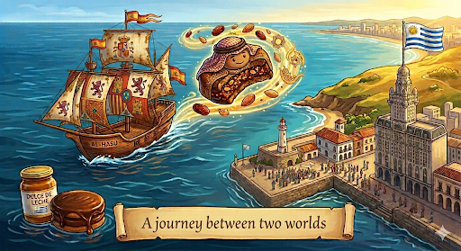

A journey between two worlds
Imagine two cookies with a lot of sweet filling in the middle and covered in chocolate.
That exists and it is called ALFAJOR.
The Origin
In the beginning, the alfajor was born in the Arab world, more specifically in the Iberian Peninsula, in the 12th and 13th centuries.
Named al-hasú, it was made from honey, nuts such as almonds, and spices.
From 700 to 1400, the Muslim conquest of the Iberian Peninsula took place. The Arabs influenced all of Europe with their sweets, poetry, and architecture.
Near the 16th century, in the midst of the colonization and conquest of the American continent, it entered camouflaged among the supplies of colonial ships as part of the culinary traditions that the Spanish had already assimilated from Arab culture.
The first formal document that records the presence of the alfajor in the Río de la Plata region, today Argentina and Uruguay, dates from 1770.
The American Transformation: From "Al-Hasú" to Dulce de Leche
Once the alfajor landed in South America, it underwent a radical evolution. The traditional Spanish-Arab recipe adapted to the local ingredients of the New World. The biggest game-changer was dulce de leche.
Local cooks replaced the honey and nut filling with this rich, creamy milk caramel. They also swapped the heavy dough for softer, melt-in-your-mouth cookies made with cornstarch or wheat flour. The alfajor was no longer just an exotic import; it had acquired its own South American identity.
The Industrial Boom in Uruguay and the Chocolate Coating
The alfajor we imagined at the beginning, the one covered in chocolate, was perfected in the 20th century. In the middle of that century, exactly in 1953 in Uruguay, in the city of Minas, Conrado Cedrés founded the iconic brand Alfajores de las Sierras de Minas, the first brand in Uruguay.
It became the very first commercial alfajor brand in the country, shifting the treat from an artisanal bakery item to a packaged phenomenon sold in every local almacén.
Conclusion: Why the Journey Matters
Ultimately, the alfajor is much more than a popular snack; it is a delicious timeline of globalization. Its survival and evolution prove how food adapts to history. When Uruguayans enjoy an alfajor today, they are not just eating a local sweet, they are tasting a centuries-old heritage that connects ancient Islamic traditions, Spanish colonial voyages, and South American creativity.
The alfajor matters because it mirrors the identity of Uruguay itself: a beautiful blend of different worlds.